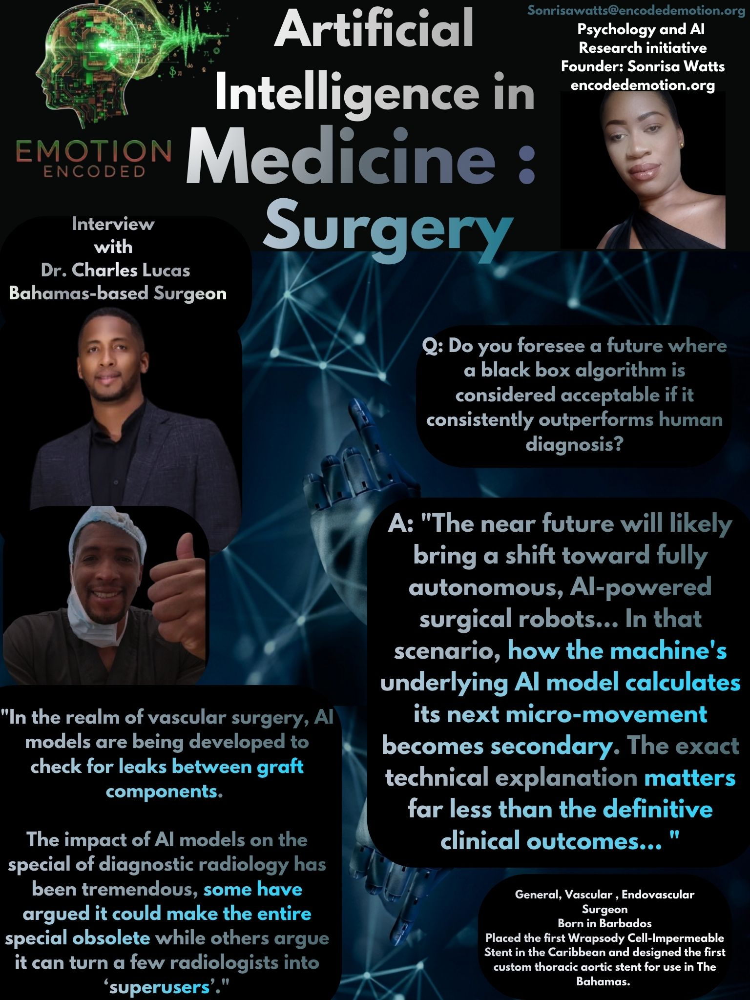

I spoke with Dr. Charles P. Lucas to analyze how pioneering surgical operators evaluate explainability, automation bias, and human accountability in high-stakes clinical systems. Dr. Lucas is a trailblazing General, Vascular, and Endovascular Surgeon based in The Bahamas, holding a Doctor of Medicine from the University of the West Indies and fellowship training from the University of Toronto. Celebrated for regional surgical firsts, including introducing the Caribbean's first Wrapsody stent and designing the first custom thoracic aortic stent in The Bahamas, Dr. Lucas operates at the absolute cutting edge of specialized clinical practice. His insights reflect the critical intersection of advanced technology and deeply specialized human intuition in high-pressure medical environments.
The Spatial vs. Empirical Paradox
Question: When an AI gives advice, which is better? Would you trust a visual simulation of the next move, or a summary of clinical evidence?
Dr. Lucas Response: The choice between a visual simulation and a summary of clinical evidence isn't an "either/or" scenario; it is highly contextual. The value of the AI’s advice depends entirely on the clinical setting and the specific task at hand. Both modalities have their tradeoffs, but as a clinician, you may need both depending on the scenario. In general medical practice and evidence-based decision-making, a summary of the clinical evidence is foundational. AI can review a patient's chart, synthesize years of historical data, and recommend a specific medication or dosage tailored to that patient's unique variables. I personally believe that the AI model should also present the requisite, plausible evidence, and then the clinician should verify the logic. This human-in-the-loop approach should be the standard. Conversely, in the surgical environment, visual simulations are invaluable. The ability of AI to generate high-fidelity 3D reproductions of a patient's anatomy by synthesizing imaging data (like CT and MRI scans) can directly guide the steps of an operation. These visualizations have a massive role to play in pre-operative planning, allowing us to map out the anatomy and strategy beforehand. In the realm of vascular surgery, AI models are being developed to check for leaks between graft components. The impact of AI models on the special of diagnostic radiology has been tremendous, some have argued it could make the entire special obsolete while others argue it can turn a few radiologists into ‘superusers’. Depending on the clinical scenario, we need both: data-driven evidence summaries for medical decision-making, and advanced visual simulations for surgical precision.
Insight: Algorithmic assistance must match the operational environment. While cognitive, evidence-based data tracking guides overall therapeutic strategy, real-time procedural execution requires intuitive, spatial, and visual outputs. Trust is established not by forcing a single modality, but by ensuring a human-in-the-loop framework where clinicians continuously cross-examine empirical logs and 3D imagery.
The Equity and Autonomy Shift
Question: Do you foresee a future where a black box algorithm (An AI that cannot explain its decisions) is considered acceptable if it consistently outperforms human diagnosis?
Dr. Lucas Response: Do I foresee a future where black box AI recommendations are acceptable? I think there are some cases where they could be, but my knee-jerk opinion has been that this should primarily occur outside of acute or direct patient care, such as in population health and predicting macro-level trends. When dealing with day-to-day patient care, a healthcare worker's intentions, methods, and clinical reasoning are subjected to intense scrutiny. From an ethical standpoint, we generally need to know the underlying process and exactly how decisions are made. When formulating medical treatment plans, making direct clinical decisions, or conducting specific counseling with patients, we must be transparent and able to explain exactly how an AI arrived at a certain conclusion. Unfortunately a number of algorithms promoted for use in healthcare have found have racial and gender bias, thus transparency truly matter. Furthermore, if we are to maintain the public trust we should be able to examine thoroughly the inner working of these models. On the other hand I can easily envision use-cases a black box model would be much more acceptable. For example when dealing with huge swaths of data to determine a long-term prognosis, there may not be a direct, linear relationship between the variables that a human mind can easily map out. In those data-heavy prognostic settings, the lack of an explicit explanation maybe acceptable if the prediction is accurate. The near future will likely bring a shift toward fully autonomous, AI-powered surgical robots. Trained on massive datasets including real-life surgical footage, technical logs, and highly complex virtual simulation environments. These systems will eventually perform procedures independently. In that scenario, how the machine's underlying AI model calculates its next micro-movement becomes secondary. The exact technical explanation matters far less than the definitive clinical outcomes. Once the outcomes of these AI-driven robots are proven to be comparable or superior to human surgeons, they will inevitably take over and become the standard of care. This will be an absolute game-changer for regional healthcare equity. For the Caribbean, having access to autonomous systems that consistently deliver flawless surgical outcomes would completely transform patient care, regardless of whether we can map out every line of code behind the robot's decisions. Ultimately, if you look at the core lifecycle of implementing medical AI, the final and most crucial step is always continuous evaluation and feedback. In our current clinical scenario, a black box is a tough sell for direct, everyday patient care. But when it comes to specific scenarios e.g high-level data synthesis or autonomous robotics the "how" becomes less important than the results. I never thought AI would be as advanced as it is today, so I am fully prepared to see these boundaries shift.
Insight: The demand for explainability exists on a gradient dictated by clinical context, systemic bias, and regional access. While day-to-day diagnostic and counseling pathways require strict algorithmic transparency to mitigate deep-seated racial and gender biases, the calculation shifts completely when addressing macro-forecasting or autonomous surgical mechanics. In under-resourced or regional healthcare systems, perfect clinical utility and flawless, automated surgical execution can eclipse the need for step-by-step code transparency, turning high-performance "black box" automated robotics into a powerful equalizer for regional health equity.
The Tactile Reality Check
Question: When an AI's data contradicts what you can literally feel with your own hands during a bypass, which one wins? Or would you re-evaluate?
Dr. Lucas Response: The very first step is to always put the patient first, which means removing my own ego from the situation. I would pause and re-evaluate my physical findings against the AI's data. If the AI is an explainable model that can articulate exactly how it came to its conclusion, that would be incredibly helpful in this scenario. However, if it cannot explain its reasoning and I am highly confident in my tactile feedback, yet the AI remains strongly contradictory, I would bring a third-party colleague to the table if time permits. It is also important to perform a rapid clinical risk analysis: What is the risk to the patient if I ignore the AI, versus the risk if I follow it? Ultimately, a decision will have to be made, and I, as a physician, have to shoulder that burden of responsibility and decide which path I believe is best. AI models have no legal or ethical responsibility to the patient. They haven't sworn an oath. Asking this question absolutely puts into perspective why it is so crucial to keep the clinician at the center and heart of the decision-making process. Making sure the patient's needs are paramount all comes back to our foundational oath: First, do no harm. That is what we swore to do, and in the operating room, that is the ultimate deciding factor.
Insight: When digital data directly clashes with physical, tactile feedback, resolving human-machine friction requires active cognitive calibration rather than blind automation bias. An unexplainable algorithm cannot override an operator’s sensory and clinical confidence without a thorough, real-time risk analysis. Because algorithms operate outside of legal, moral, and historical frameworks, the ethical burden of care rests entirely on the human expert whose clinical judgment is anchored by a lifelong professional oath.
Research Verdict
Conclusion: Fieldwork with Dr. Lucas demonstrates that building trust in medical AI requires balancing empirical data synthesis with spatial execution tools, while actively confronting systemic algorithmic bias. As technology edges closer to autonomous intervention, the ultimate defense against catastrophic failure remains the human operator—relying on tactile feedback, peer verification, and an unwavering commitment to the foundational oath of patient care.
Sonrisa Watts // Emotion Encoded // 2026